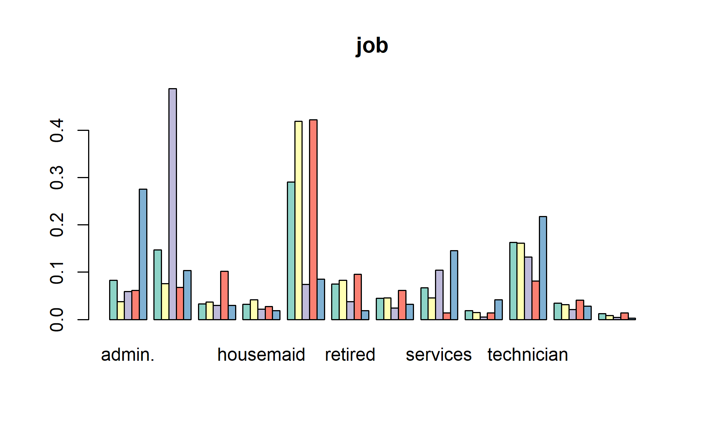
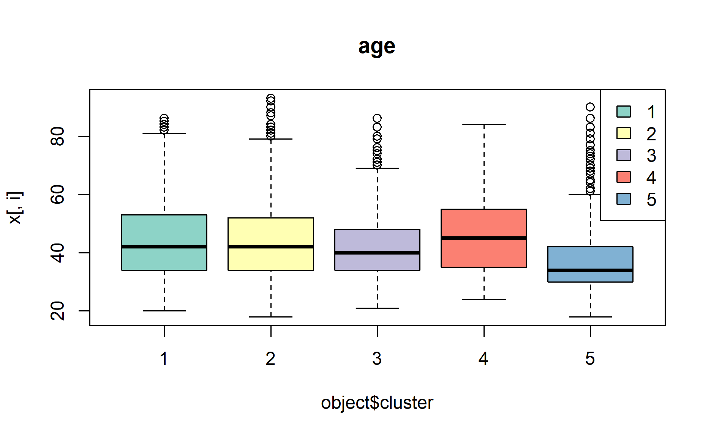
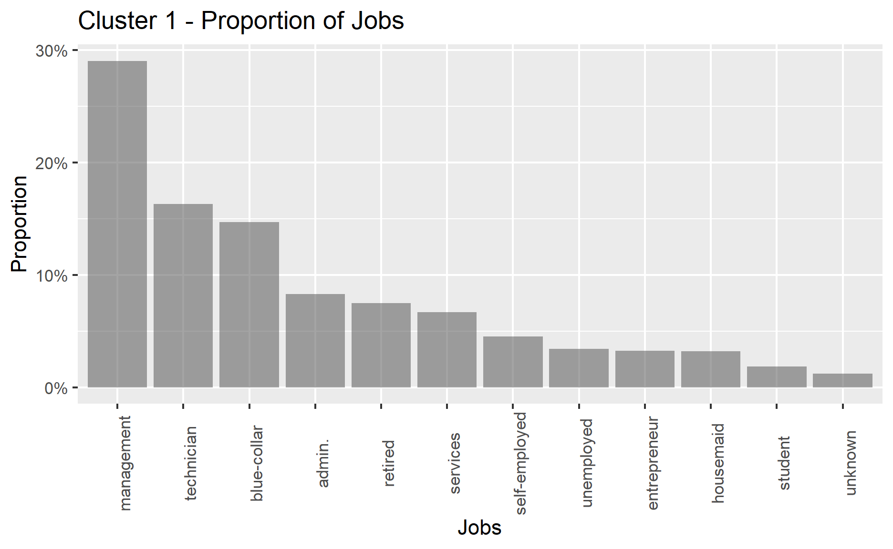
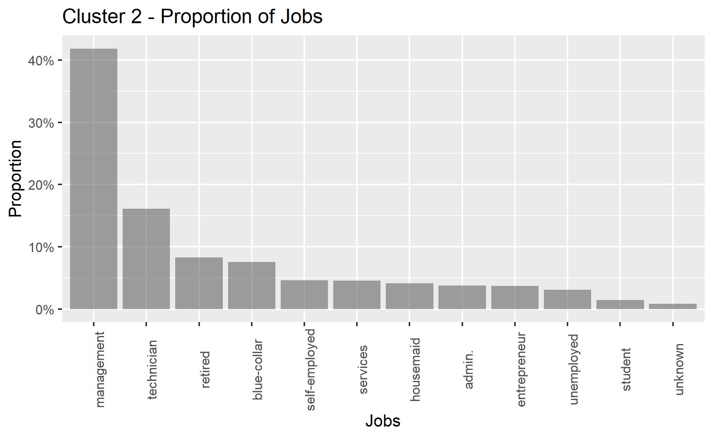
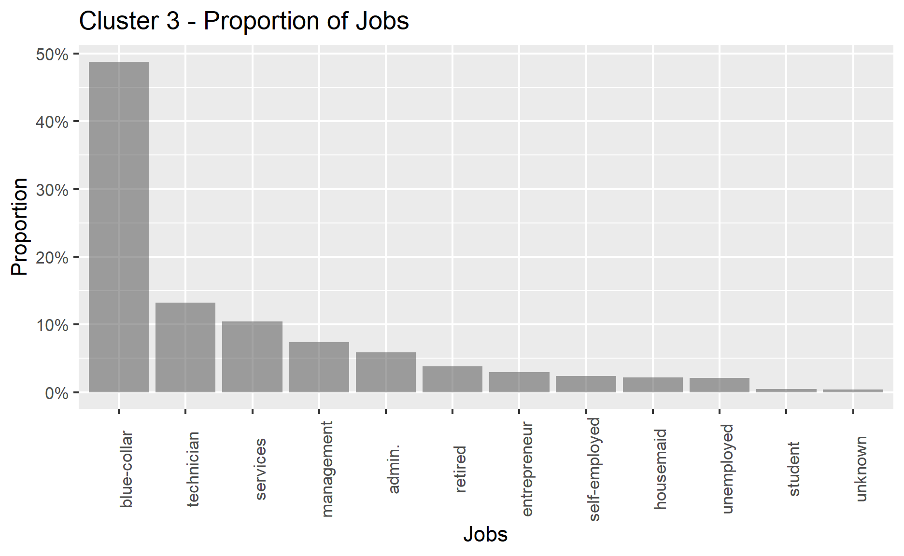
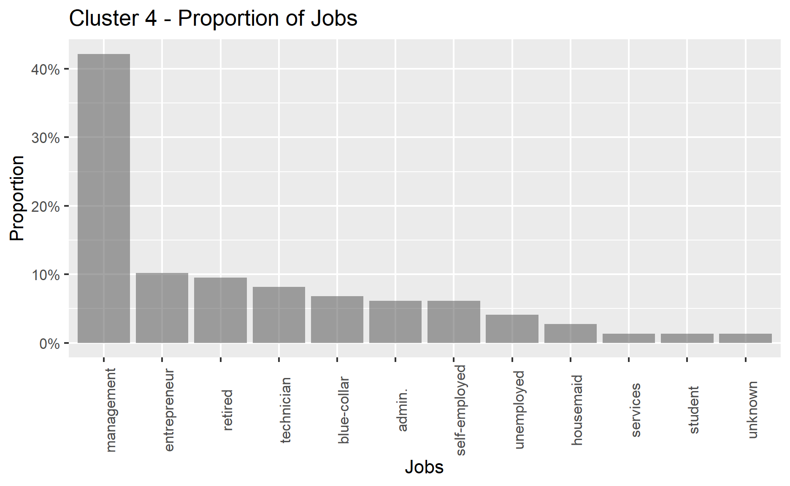
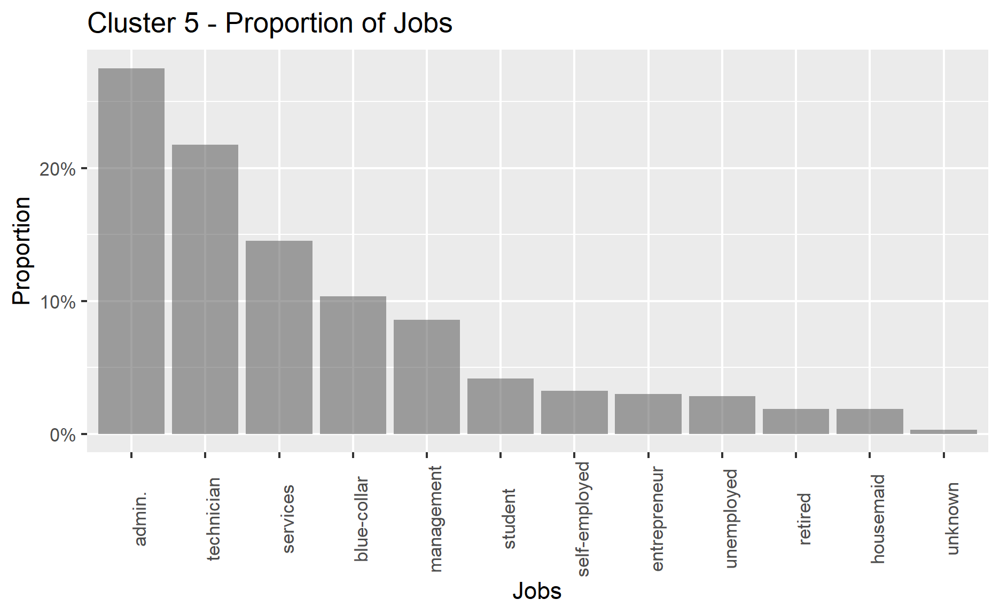
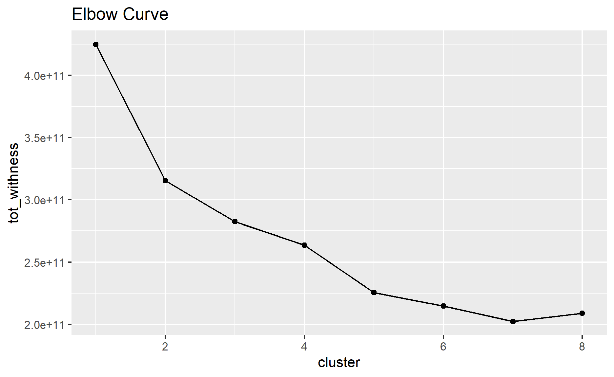

Photo by Karolina Grabowska from Pexels
Recently, I happened to come across a paper on how clustering can be used in actuarial valuation.
In the paper, the author used clustering algorithm to find the representative model points for a group of variable annuities before calculating the market value and Greeks of every contract in the portfolio.
This has reduced the number of model points, which reduced the computing time significantly. In the paper, the method is estimated about 66 times faster than the conventional method.
Hence, in this post, I will be exploring cluster algorithm, k-prototypes.
As the discussion will be building on my previous post on clustering, this would be a rather short post.
Below are the links to the previous posts:
Limitation of K-means clustering
One of the issue of using K-means clustering algorithm is this method could only take in numeric variables.
To overcome this, one could convert the non-numeric variables into dummy variables.
However, it is not ideal to convert the non-numeric variables to dummy variables and perform the clustering (IBM, n.d.).
K-Prototypes
K-Prototypes is a clustering method that allows one to perform clustering on mixed data types.
The author explained that the k-prototypes algorithm combines the “means” of the numerical part and the “modes” of the categorical part to build a new hybrid Cluster Center “prototype”(Soliya, n.d.).
Application of data clustering and machine learning in variable annuity valuation
The distance between two records x and y can be defined as:
\(D(x,y,\lambda)=\sqrt{\sum_{h=1}^{d_1}(x_h-y_h)^2+\lambda\sum_{h=d_1+1}^{d}\delta({x_h,y_h})}\)
where:
the first \(d_1\) attributes are numeric and the last \(d_2=d-d_1\) attribures are categorical
\({x_h}\) and \({y_h}\) are the hth component of x and y, respectively \(\lambda\)
simple matching distance is defined as: \(\delta({x_h,y_h})=\{_{1,\ if\ x_h\ \neq\ y_h}^{0,\ if\ x_h\ =\ y_h}\)
The objective function for k-prototypes algorithm is to minimize the following function:
\(P_{\lambda}=\sum_{j=i}^{k}\sum_{x\in C_{j}}D^2(x, \mu_j, \lambda)\)
where:
k is the number of clusters
\(C_j\) is the jth cluster
\(\mu_j\) is the center or prototype of cluster \(C_j\)
Okay, that’s all the discussions on the algorithm.
Let’s start the demonstration!
Demonstration
For this demonstration, I will be using bank marketing data from UCI Machine Learning Repository.
This dataset contains data points from past direct marketing campaigns of a Portuguese banking institution.

Photo by Monstera from Pexels
Setup the environment
First, I will set up the environment by calling all the packages I need for the analysis later.
pacman::p_load(tidyverse, readr, clustMixType)Import the data
Next, I will import the data into the environment.
Kproto clustering
Okay, let’s start the demonstration on clustering by using kproto function.
Note that similar to other clustering algorithms, we will need to specify the number of clusters upfront before running the clustering algorithm.
kpres <- kproto(df, 5)# NAs in variables:
age job marital education default balance housing
0 0 0 0 0 0 0
loan contact day month duration campaign pdays
0 0 0 0 0 0 0
previous poutcome y
0 0 0
0 observation(s) with NAs.
Estimated lambda: 2716532
0 observation(s) with NAs.To understand the characteristics of the different clusters, we could call the clustering results.
kpresDistance type: standard
Numeric predictors: 7
Categorical predictors: 10
Lambda: 2716532
Number of Clusters: 5
Cluster sizes: 1748 7508 6827 147 6376
Within cluster error: 31206981321 65081637216 52424519586 19105775396 57499226991
Cluster prototypes:
age job marital education default balance housing
1 43.71110 management married tertiary no 6965.3312 no
2 43.61015 management married tertiary no 799.6534 no
3 41.39065 blue-collar married secondary no 856.1601 yes
4 45.80272 management married tertiary no 25419.6599 no
5 36.61841 admin. single secondary no 446.6633 yes
loan contact day month duration campaign pdays previous
1 no cellular 16.33753 nov 275.6150 2.609840 39.76945 0.7500000
2 no cellular 16.23455 aug 253.3195 2.924747 31.28663 0.5575386
3 no unknown 15.50051 may 257.5398 2.741907 29.51164 0.3644353
4 no cellular 16.46939 nov 253.0000 2.931973 37.84354 0.7142857
5 no cellular 15.37171 may 260.1371 2.532465 63.33140 0.8105395
poutcome y
1 unknown no
2 unknown no
3 unknown no
4 unknown no
5 unknown noIn the results, the numeric value represents the mean value of the cluster and mode for the categorical variables.
Following are some of the insights gathered from the clustering:
Among the groups, the customers under group 4 have the highest average balance, while group 3 has the lowest average balance
Despite that the customers under group 4 & 6 are rather similar, i.e. both groups are mostly married and have a tertiary education, the average balance under group 6 is somewhat much lower than group 4
Similarly, the customer characteristics under group 3 & 5 are also quite similar, the average balance of the customers under group 5 are more than 3 times of the average balance of group 3
As mentioned earlier, the algorithm requires us to upfront indicate the number of clusters. To find the optimal number of clusters, we will loop through the clustering algorithm through different numbers.
Alternatively, we could pass the results into summary function.
summary(kpres)age
Min. 1st Qu. Median Mean 3rd Qu. Max.
1 20 34 42 43.71110 53 86
2 18 34 42 43.61015 52 93
3 21 34 40 41.39065 48 86
4 24 35 45 45.80272 55 84
5 18 30 34 36.61841 42 90
-----------------------------------------------------------------
job
cluster admin. blue-collar entrepreneur housemaid management retired
1 0.083 0.147 0.033 0.032 0.291 0.075
2 0.038 0.076 0.037 0.041 0.418 0.083
3 0.059 0.488 0.030 0.022 0.074 0.038
4 0.061 0.068 0.102 0.027 0.422 0.095
5 0.275 0.104 0.030 0.019 0.086 0.019
cluster self-employed services student technician unemployed unknown
1 0.045 0.067 0.018 0.163 0.034 0.012
2 0.046 0.046 0.015 0.161 0.031 0.009
3 0.024 0.104 0.005 0.132 0.021 0.004
4 0.061 0.014 0.014 0.082 0.041 0.014
5 0.032 0.145 0.042 0.218 0.029 0.003
-----------------------------------------------------------------
marital
cluster divorced married single
1 0.098 0.643 0.259
2 0.104 0.709 0.187
3 0.097 0.800 0.104
4 0.116 0.667 0.218
5 0.151 0.252 0.597
-----------------------------------------------------------------
education
cluster primary secondary tertiary unknown
1 0.148 0.399 0.404 0.049
2 0.137 0.245 0.573 0.045
3 0.243 0.624 0.091 0.043
4 0.075 0.286 0.605 0.034
5 0.072 0.752 0.145 0.030
-----------------------------------------------------------------
default
cluster no yes
1 0.999 0.001
2 0.983 0.017
3 0.983 0.017
4 1.000 0.000
5 0.975 0.025
-----------------------------------------------------------------
balance
Min. 1st Qu. Median Mean 3rd Qu. Max.
1 3679 4849.5 5978.0 6965.3312 8281.50 16119
2 -6847 73.0 447.5 799.6534 1228.00 4089
3 -3313 87.0 530.0 856.1601 1335.00 4746
4 16264 18189.5 22196.0 25419.6599 26770.00 81204
5 -2122 11.0 221.0 446.6633 544.25 4464
-----------------------------------------------------------------
housing
cluster no yes
1 0.537 0.463
2 0.809 0.191
3 0.181 0.819
4 0.578 0.422
5 0.279 0.721
-----------------------------------------------------------------
loan
cluster no yes
1 0.921 0.079
2 0.855 0.145
3 0.827 0.173
4 0.952 0.048
5 0.819 0.181
-----------------------------------------------------------------
contact
cluster cellular telephone unknown
1 0.697 0.089 0.215
2 0.853 0.071 0.076
3 0.254 0.074 0.672
4 0.721 0.088 0.190
5 0.817 0.044 0.139
-----------------------------------------------------------------
day
Min. 1st Qu. Median Mean 3rd Qu. Max.
1 1 10 18 16.33753 21 31
2 1 8 17 16.23455 23 31
3 1 8 15 15.50051 21 31
4 1 11 18 16.46939 21 31
5 1 8 15 15.37171 21 31
-----------------------------------------------------------------
month
cluster jan feb mar apr may jun jul aug sep oct
1 0.017 0.054 0.017 0.078 0.186 0.141 0.106 0.132 0.016 0.028
2 0.043 0.078 0.018 0.055 0.050 0.085 0.189 0.323 0.022 0.026
3 0.011 0.024 0.002 0.051 0.560 0.210 0.085 0.012 0.003 0.004
4 0.014 0.068 0.007 0.061 0.184 0.122 0.054 0.177 0.020 0.027
5 0.045 0.081 0.008 0.085 0.359 0.052 0.204 0.051 0.010 0.014
cluster nov dec
1 0.217 0.009
2 0.102 0.008
3 0.038 0.001
4 0.259 0.007
5 0.086 0.004
-----------------------------------------------------------------
duration
Min. 1st Qu. Median Mean 3rd Qu. Max.
1 0 107 185 275.6150 344.25 2372
2 4 102 173 253.3195 311.00 3422
3 3 102 181 257.5398 319.00 3785
4 8 95 175 253.0000 323.50 1598
5 0 104 183 260.1371 323.00 3253
-----------------------------------------------------------------
campaign
Min. 1st Qu. Median Mean 3rd Qu. Max.
1 1 1 2 2.609840 3 29
2 1 1 2 2.924747 3 38
3 1 1 2 2.741907 3 55
4 1 1 2 2.931973 3 31
5 1 1 2 2.532465 3 38
-----------------------------------------------------------------
pdays
Min. 1st Qu. Median Mean 3rd Qu. Max.
1 -1 -1 -1 39.76945 -1 779
2 -1 -1 -1 31.28663 -1 854
3 -1 -1 -1 29.51164 -1 808
4 -1 -1 -1 37.84354 -1 589
5 -1 -1 -1 63.33140 79 842
-----------------------------------------------------------------
previous
Min. 1st Qu. Median Mean 3rd Qu. Max.
1 0 0 0 0.7500000 0 35
2 0 0 0 0.5575386 0 38
3 0 0 0 0.3644353 0 30
4 0 0 0 0.7142857 0 23
5 0 0 0 0.8105395 1 55
-----------------------------------------------------------------
poutcome
cluster failure other success unknown
1 0.130 0.043 0.048 0.779
2 0.097 0.034 0.050 0.819
3 0.077 0.025 0.011 0.887
4 0.095 0.041 0.054 0.810
5 0.162 0.063 0.035 0.740
-----------------------------------------------------------------
y
cluster no yes
1 0.839 0.161
2 0.842 0.158
3 0.942 0.058
4 0.850 0.150
5 0.875 0.125
-----------------------------------------------------------------Visualize the result
To visualize the clustering result, we could use plot function.
plot(kpres, vars = "job")
If a numeric variable is being passed to the function, boxplot will be used to show the distribution.
plot(kpres, vars = "age")
Alternatively, we can use ggplot to visualize the result.
for (i in 1:5){
graph <- df %>%
bind_cols(tibble(cluster = kpres$cluster)) %>%
filter(cluster == i) %>%
group_by(job) %>%
tally() %>%
rename(count = n) %>%
ggplot(aes(x = reorder(job, -count),
y = count/sum(count),
alpha = 0.8)) +
geom_col() +
scale_y_continuous(labels = scales::percent) +
xlab("Jobs") +
ylab("Proportion") +
labs(title = paste0("Cluster ", i, " - Proportion of Jobs")) +
theme(axis.text.x = element_text(angle = 90),
legend.position="none")
print(graph)
}
Elbow Curve
k_num <- 8
tot_wss <- sapply(1:k_num,
function(k){kproto(df, k)$tot.withinss})Next, I will convert the list to a tibble table and include the respective number of clusters.
withness_cluster <-
as_tibble(tot_wss) %>%
rename(tot_withness = value) %>%
mutate(cluster = row_number())This will allow us to visualize the results by using ggplot function.
ggplot(withness_cluster,
aes(x = cluster, y = tot_withness)) +
geom_point() +
geom_line() +
labs(title = "Elbow Curve")
Conclusion
That’s all for the day!
Thanks for reading the post until the end.
Feel free to contact me through email or LinkedIn if you have any suggestions on future topics to share.
Refer to this link for the blog disclaimer.
Till next time, happy learning!

*Took this when I went to Lang Tengah, Malaysia